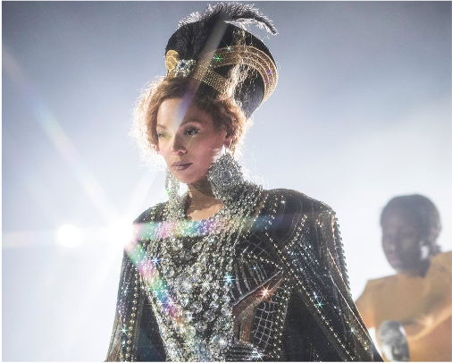

Personal
Beyoncé Giselle Knowles-Carter, born September 4, 1981, is an American singer, songwriter, record producer, and actress. Born and raised in Houston, Texas, Beyoncé performed in various singing and dancing competitions as a child. She rose to fame in the late 1990s as the lead singer of Destiny's Child, one of the best-selling girl groups of all time. Their hiatus saw the release of her first solo album, Dangerously in Love (2003), which featured the US Billboard Hot 100number-one singles "Crazy in Love" and "Baby Boy".
Beyoncé is one of the world's best-selling recording artists, having sold 118 million records worldwide. She is the first artist to debut at number one on the Billboard 200with their first six solo studio albums. Her success during the 2000s was recognized with the RIAA's Top Certified Artist of the Decade as well as Billboard's Top Female Artist of the Decade. Beyoncé's accolades include 28 Grammy Awards, 26 MTV Video Music Awards (including the Michael Jackson Video Vanguard Award in 2014), 24 NAACP Image Awards, 31 BET Awards, and 17 Soul Train Music Awards; all of which are more than any other singer. In 2014, Billboard named her the highest-earning black musician of all time, while in 2020, she was included on Time's list of 100 women who defined the last century.
Legacy
Beyoncé's success has led to her becoming a cultural icon and earning her the nickname "Queen Bey”. In The New Yorker, music critic Jody Rosen described Beyoncé as "the most important and compelling popular musician of the twenty-first century... the result, the logical end point, of a century-plus of pop."Author James Clear, in his book Atomic Habits (2018), draws a parallel between the singer's success and the dramatic transformations in modern society: "In the last one hundred years, we have seen the rise of the car, the airplane, the television, the personal computer, the internet, the smartphone, and Beyoncé." The Observer named her Artist of the Decade (2000s) in 2009.
She is often credited for the cultural shift towards female pop singers rapping and for creating the staccato style of 'rap-singing' she used in songs like "Bug a Boo" and "Say My Name". Uproxx stated that Beyoncé is the primary pioneer of the singsong style that dominates Hip-Hop currently, while Sheldon Pearce of Pitchfork noticed her contribution in changing the sound of pop music radio with her hip-hop assisted style.
She was known for coining popular phrases such as 'put a ring on it,' a euphemism for marriage proposal, 'I woke up like this,' which started a trend of posting morning selfies with the hashtag #iwokeuplikethis, and 'boy, bye,' which was used as part of the Democratic National Committee's campaign for the 2020 election. Similarly, she also came up with the phrase "visual album" following the release of her fifth studio album, which had a video for every song. This has been recreated by many other artists since, such as Frank Ocean and Melanie Martinez. The album also popularized surprise releases, with many artists releasing songs, videos or albums with no prior announcement, such as Nicki Minaj, Eminem, Frank Ocean, Jay-Z and Drake.
Artistry
Voice and Musical Style
Beyoncé's music is generally R&B, pop and hip hop but she also incorporates soul and funk into her songs. 4 demonstrated Beyoncé's exploration of 1990s-style R&B, as well as further use of soul and hip hop than compared to previous releases. While she almost exclusively releases English songs, Beyoncé recorded several Spanish songs for Irreemplazable (re-recordings of songs from B'Day for a Spanish-language audience), and the re-release of B'Day. To record these, Beyoncé was coached phonetically by American record producer Rudy Perez.Influences
The feminism and female empowerment themes on Beyoncé's second solo album B'Day were inspired by her role in Dreamgirls and by singer Josephine Baker. Beyoncé paid homage to Baker by performing "Déjà Vu" at the 2006 Fashion Rocks concert wearing Baker's trademark mini-hula skirt embellished with fake bananas. Beyoncé's third solo album, I Am... Sasha Fierce, was inspired by Jay-Z and especially by Etta James, whose "boldness" inspired Beyoncé to explore other musical genres and styles. Her fourth solo album, 4, was inspired by Fela Kuti, 1990s R&B, Earth, Wind & Fire, DeBarge, Lionel Richie, Teena Marie, The Jackson 5, New Edition, Adele, Florence and the Machine, and Prince.Alter Ego
Source: Wikipedia